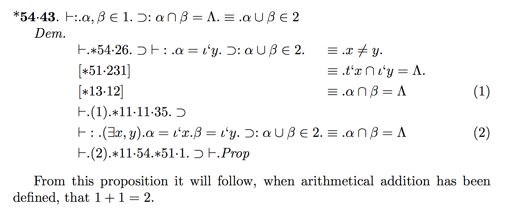
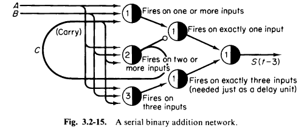
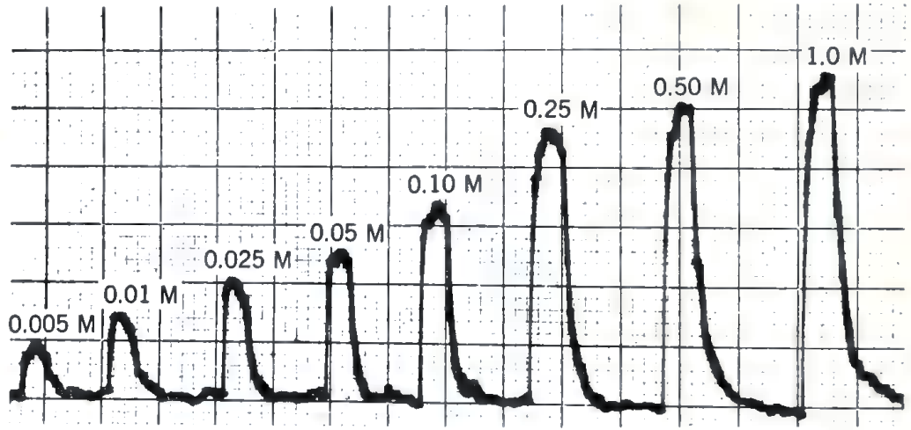
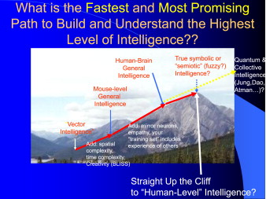

The enigma of Marvin Minsky
In an 1993 interview, Robert Hecht-Nielsen described how Minsky stood in relation with the neural network community (Rosenfeld and Anderson 2000, 303–5):
Minsky had gone to the same New York “science” high school as Frank Rosenblatt, a Cornell psychology Ph.D. whose “perceptron” neural network pattern recognition machine was receiving significant media attention. The wall-to-wall media coverage of Rosenblatt and his machine irked Minsky. One reason was that although Rosenblatt’s training was in “soft science,” his perceptron work was quite mathematical and quite sound—turf that Minsky, with his “hard science” Princeton mathematics Ph.D., didn’t feel Rosenblatt belonged on. Perhaps an even greater problem was the fact that the heart of the perceptron machine was a clever motor-driven potentiometer adaptive element that had been pioneered in the world’s first neurocomputer, the “SNARC”, which had been designed and built by Minsky several years earlier! In some ways, Minsky’s early career was like that of Darth Vader. He started out as one of the earliest pioneers in neural networks but was then turned to the dark side of the force (AI) and became the strongest and most effective foe of his original community. This view of his career history is not unknown to him. When he was invited to give the keynote address at a large neural network conference in the late 1980s to an absolutely rapt audience, he began with the words: “I am not the Devil!”
However, it appears he had changed his mind later. As recounted by Terence Sejnowski in (Sejnowski 2018, 256–58):
I was invited to attend the 2006 Dartmouth Artificial Intelligence Conference, “AI@50,” a look back at the seminal 1956 Summer Research Project on artificial intelligence held at Dartmouth and a look forward to the future of artificial intelligence. … These success stories had a common trajectory. In the past, computers were slow and only able to explore toy models with just a few parameters. But these toy models generalized poorly to real-world data. When abundant data were available and computers were much faster, it became possible to create more complex statistical models and to extract more features and relationships between the features.
In his summary talk at the end of the conference [The AI@50 conference (2006)], Marvin Minsky started out by saying how disappointed he was both by the talks and by where AI was going. He explained why: “You’re not working on the problem of general intelligence. You’re just working on applications.” …
There was a banquet on the last day of AI@50. At the end of the dinner, the five returning members of the 1956 Dartmouth Summer Research Project on Artificial Intelligence made brief remarks about the conference and the future of AI. In the question and answer period, I stood up and, turning to Minsky, said: “There is a belief in the neural network community that you are the devil who was responsible for the neural network winter in the 1970s. Are you the devil?” Minsky launched into a tirade about how we didn’t understand the mathematical limitations of our networks. I interrupted him—“Dr. Minsky, I asked you a yes or no question. Are you, or are you not, the devil?” He hesitated for a moment, then shouted out, “Yes, I am the devil!”
What are we to make of the enigma of Minsky? Was he the devil, or was he not the devil?
The intellectual history of Minsky
During his undergrad years, Minsky was deeply impressed by Andrew Gleason,1 and decided to work on pure mathematics, resulting in his 1951 undergraduate thesis A Generalization of Kakutani’s Fixed-Point Theorem, which extended an obscure fixed point theorem of Kakutani – not the famous version, as Kakutani proved more than one fixed point theorems.
1 (Bernstein 1981)
I asked Gleason how he was going to solve it. Gleason said he had a plan that consisted of three steps, each of which he thought would take him three years to work out. Our conversation must have taken place in 1947, when I was a sophomore. Well, the solution took him only about five more years … Gleason made me realize for the first time that mathematics was a landscape with discernible canyons and mountain passes, and things like that. In high school, I had seen mathematics simply as a bunch of skills that were fun to master—but I had never thought of it as a journey and a universe to explore. No one else I knew at that time had that vision, either.”
Theorem 1 (Kakutani’s fixed point theorem on the sphere) If \(f\) is a \(\R^2\)-valued continuous function on the unit sphere in \(\R^3\), then for any side length \(r \in (0, \sqrt 3)\), there exists \(x_1, x_2, x_n\) on the sphere forming an equilateral triangle with side length \(r\), such that \(f(x_1) = f(x_2) = f(x_3)\).
Equivalently, if \(x_1, x_2, x_3\) form an equilateral triangle on the unit sphere, then there exists a rotation \(T\) such that \(f(T(x_1)) = f(T(x_2)) = f(T(x_3))\).
Using knot theory, Minsky proved an extension where \(x_1, x_2, x_3\) are three points of a square or a regular pentagon (M. Minsky 2011). The manuscript has “disappeared” (“Selected Publications of Marvin Minsky” n.d.).
I wrote it up and gave it to Gleason. He read it and said, ‘You are a mathematician.’ Later, I showed the proof to Freeman Dyson, at the Institute for Advanced Study, and he amazed me with a proof (Dyson 1951) that there must be at least one square that has the same temperature at all four vertices. He had found somewhere in my proof a final remnant of unused logic. (Bernstein 1981)
He then got interested in neural networks and reinforcement learning, and constructed a very simple electromechanical machine called SNARC.2 The SNARC machine is a recurrent neural network, performing reinforcement learning by Hebbian learning rule. It simulates a mouse running around a maze, and the operator watches an indicator light showing the mouse. The operator can press a button as a reward signal, and this would cause an electric motor to turn a chain. The chain is clutched to rheostats that connect the neurons, and the stretch of the clutch is proportional to the charge in a capacitor. During the operation of the neural network, the capacitor charges up if there is neural co-activation on the connection, and decays naturally, thus serving as a short-term memory. When the reward button is pressed, the clutches turn by an amount proportional to the co-activation of neural connections, thus completing the Hebbian learning.
2 It was published as (M. Minsky 1952), but the document is not available online, and I could only piece together a possible reconstruction from the fragments of information.
Minsky was impressed by how well it worked. The machine was designed to simulate one mouse, but by some kind of error it simulated multiple mice, and yet it still worked.
The rats actually interacted with one another. If one of them found a good path, the others would tend to follow it. We sort of quit science for a while to watch the machine. … In those days, even a radio set with twenty tubes tended to fail a lot. I don’t think we ever debugged our machine completely, but that didn’t matter. By having this crazy random design, it was almost sure to work, no matter how you built it. (Bernstein 1981)
This was the last we see Minsky’s work with random neural networks. He has crossed the Rubicon, away from the land of brute reason and into the land of genuine insight.
I had the naïve idea that if one could build a big enough network, with enough memory loops, it might get lucky and acquire the ability to envision things in its head. … Even today, I still get letters from young students who say, ‘Why are you people trying to program intelligence? Why don’t you try to find a way to build a nervous system that will just spontaneously create it?’ Finally, I decided that either this was a bad idea or it would take thousands or millions of neurons to make it work, and I couldn’t afford to try to build a machine like that. (Bernstein 1981)
For his PhD thesis, Minsky worked on the mathematical theory of McCulloch–Pitts neural networks. In style, it was a fine piece of classical mathematics (M. L. Minsky 1954). Minsky would go on to write (M. Minsky 1967, chap. 3), still the best introduction to McCulloch–Pitts neural networks.
Minsky’s doctoral dissertation in mathematics from Princeton in 1954 was a theoretical and experimental study of computing with neural networks. He had even built small networks from electronic parts to see how they behaved. The story I heard when I was a graduate student at Princeton in physics was that there wasn’t anyone in the Mathematics Department who was qualified to assess his dissertation, so they sent it to the mathematicians at the Institute for Advanced Study in Princeton who, it was said, talked to God. The reply that came back was, “If this isn’t mathematics today, someday it will be,” which was good enough to earn Minsky his PhD.(Sejnowski 2018, 259)
Reading the story, I was reminded of the hacker koan about Minsky and his student Sussman:
In the days when Sussman was a novice, Minsky once came to him as he sat hacking at the PDP-6. “What are you doing?”, asked Minsky. “I am training a randomly wired neural net to play Tic-Tac-Toe” Sussman replied. “Why is the net wired randomly?”, asked Minsky. “I do not want it to have any preconceptions of how to play”, Sussman said. Minsky then shut his eyes. “Why do you close your eyes?”, Sussman asked his teacher. “So that the room will be empty.” At that moment, Sussman was enlightened.
This is based on a true story. (Levy 2010, 110–11):
… Sussman told Minsky that he was using a certain randomizing technique in his program because he didn’t want the machine to have any preconceived notions. Minsky said, “Well, it has them, it’s just that you don’t know what they are.” It was the most profound thing Gerry Sussman had ever heard. And Minsky continued, telling him that the world is built a certain way, and the most important thing we can do with the world is avoid randomness, and figure out ways by which things can be planned.
As for Sussman, I knew him for two things: writing the SICP book, and being the coordinator of the infamous summer vision project that was to construct “a significant part of a visual system” in a single summer, using only undergraduate student researchers. A brief read of his “reading list” shows where his loyalties lie: firmly in the school of neats.
(Sejnowski 2018, 28) recounts the background of the summer vision project:
In the 1960s, the MIT AI Lab received a large grant from a military research agency to build a robot that could play Ping-Pong. I once heard a story that the principal investigator forgot to ask for money in the grant proposal to build a vision system for the robot, so he assigned the problem to a graduate student as a summer project. I once asked Marvin Minsky whether the story was true. He snapped back that I had it wrong: “We assigned the problem to undergraduate students.”
During the 1960s, Minsky became collaborators with Seymour Papert, resulting in the fateful book of Perceptron, and some other projects. After rejecting neural networks, Minsky became a leading researcher in AI. His style of AI is typically described as “symbolic AI”, although a more accurate description would be The Society of Mind (SoM). Minsky developed the SoM in the 1970s with Papert, and published the definitive account in (M. Minsky 1988). As he described in the postscript:
This book assumes that any brain, machine, or other thing that has a mind must be composed of smaller things that cannot think at all. The structure of the book itself reflects this view: each page explores a theory or idea that exploits what other pages do. Some readers might prefer a more usual form of story plot. I tried to do that several times, but it never seemed to work; each way I tried to line things up left too many thoughts that would not fit. A mind is too complex to fit the mold of narratives that start out here and end up there; a human intellect depends upon the connections in a tangled web—which simply wouldn’t work at all if it were neatly straightened out.
… One of our projects was to build a machine that could see well enough to use mechanical hands for solving real-world problems; this was the origin of Builder and the insights that emerged from it. In trying to make that robot see, we found that no single method ever worked well by itself. For example, the robot could rarely discern an object s shape by using vision alone; it also had to exploit other types of knowledge about which kinds of objects were likely to be seen. This experience impressed on us the idea that only a society of different kinds of processes could possibly suffice.
Seymour Papert
Seymour Papert, the long-time collaborator of Minsky, was the second author of Perceptron. To unlock the enigma of Minsky, we must look into Papert’s past as well.
In 1958, after a doctorate in mathematics, he met Jean Piaget and became his pupil for four years. This had a formative effect on Papert. Piaget was and an important influence on the constructivism school in education. Papert would go on to make serious work in applying constructivism to actual education. For Papert, computers realize the dream of unlocking the kaleidoscopic variety of possible constructions.
Jean Piaget studied how children develop their understanding of the world. What goes on in their mind as they progressively understand that things fall down, what dogs are, and solid steel sinks but hollow steel might float? Piaget discovered that children did not simply start with a blank sheet of paper and gradually fill in sketchy details of the true model, instead they constructed naive models of small aspects the world that, as it encounters phenomena it cannot explain, would be modified or completely replaced. In this way, Piaget claimed that children are “little scientists”.
A small example would illustrate the idea. For example, when children see that leaves fall on the water and floats, but a stone sinks, so they might add a rule that “Soft things float, while hard things sink.” Then they see that a hard plastic boat floats too, so they might add a rule that “Except hard and light things also float.” Then they see that a large boat also float, so they rewrite the entire model to “Flat-bottomed things float, while small-bottomed things sink.” And so on.
There are conservative and radical ways of using Piaget’s research for pedagogy. The conservative way is to study how children tend to construct their scientific theories, and discover a sequence of evidences to present to the little scientists so that they reach the scientific orthodoxy as fast as possible. For example, we might present children with videos of curling and air hockey, and then let them play with an air hockey table, then guide them through exercises, so that they arrive as quickly as possible at the Newton’s laws of motion.
The radical way is to decenter the orthodoxy and let a thousand heterodoxies bloom. Why go for the orthodoxy, when the Duhem–Quine thesis tells us that evidence is never enough to constrain us to only one orthodoxy? And given that objectively no theory deserves the name of “orthodoxy”, how come the scientific “orthodoxy” became dominant? A critical analysis of the history shows that its dominance over aboriginal and woman ways of knowing is merely a historical accident due to an alliance with the hegemonic reason of the center over the periphery.
Papert went with the radical way.
After four years of study under Piaget, he arrived in MIT in 1963, and began working with Minsky on various topics, including the Logo Turtle robot, and the Perceptron book. The computer revolution was starting, and Papert saw computers as a way to bring radical constructivism to children.
In the real world, phenomena are limited by nature, and aspiring little heterodoxy-builders are limited by their ability to construct theories and checking their consequences. In the computer world, every children could program and construct “microworlds” from their own theories. Thus, computers would bring constructivism to the classroom. Furthermore, the constructed world inside computers could then flow out to the physical world via robots. This is why Papert worked on both Logo the programming language and Logo the turtle robots. In his words, he intended to fight “instructionism” with “constructionism” by bringing the power of computers to every child, so that they would grow up to be “bricoleurs”, working with whatever little tool they have available doing whatever is necessary to accomplish little things. This is a vital piece in his overarching project of epistemological pluralism, to liberate heterodoxical ways of knowing (S. A. Papert 1994, chap. 7):
Traditional education codifies what it thinks citizens need to know and sets out to feed children this “fish.” Constructionism is built on the assumption that children will do best by finding (“fishing”) for themselves the specific knowledge they need … it is as well to have good fishing lines, which is why we need computers, and to know the location of rich waters, which is why we need to develop a large range of mathetically rich activities or “microworlds.”
… School math, like the ideology, though not necessarily the practice, of modern science, is based on the ideal of generality – the single, universally correct method that will work for all problems and for all people. Bricolage is a metaphor for the ways of che old-fashioned traveling tinker, the jack-of-all-trades who knocks on the door offering to fix whatever is broken. Faced with a job, the tinker rummages in his bag of assorted tools to find one that will fit the problem at hand and, if one tool does nor work for the job, simply tries another without ever being upset in the slightest by the lack of generality. The basic tenets of bricolage as a methodology for intellectual activity are: Use what you’ve got, improvise, make do. And for the true bricoleur, the tools in the bag will have been selected over a long time by a process determined by more than pragmatic utility. These mental tools will be as well worn and comfortable as the physical tools of the traveling tinker; they will give a sense of the familiar, of being at ease with oneself …
Kitchen math provides a clear demonstration of bricolage in its seamless connection with a surrounding ongoing activity that provides the tinker’s bag of tricks and tools. The opposite of bricolage would be to leave the “cooking microworld” for a “math world,” to work the fractions problem using a calculator or, more likely in this case, mental arithmetic. But the practitioner of kitchen math, as a good bricoleur, does not stop cooking and turn to math; on the contrary, the mathematical manipulations of ingredients would be indistinguishable to an outside observer from the culinary manipulations.
… The traditional epistemology is based on the proposition, so closely linked to the medium of text-written and especially printed. Bricolage and concrete thinking always existed but were marginalized in scholarly contexts by the privileged position of text. As we move into the computer age and new and more dynamic media emerge, this will change.
According to Papert, his project is epistemological pluralism, or promoting different ways of knowing (Turkle and Papert 1990):
The diversity of approaches to programming suggests that equal access to even the most basic elements of computation requires accepting the validity of multiple ways of knowing and thinking, an epistemological pluralism. Here we use the word epistemology in a sense closer to Piaget’s than to the philosopher’s. In the traditional usage, the goal of epistemology is to inquire into the nature of knowledge and the conditions of its validity; and only one form of knowledge, the propositional, is taken to be valid. The step taken by Piaget in his definition of epistemologie genetique was to eschew inquiry into the “true” nature of knowledge in favor of a comparative study of the diverse nature of different kinds of knowledge, in his case the kinds encountered in children of different ages. We differ from Piaget on an important point, however. Where he saw diverse forms of knowledge in terms of stages to a finite end point of formal reason, we see different approaches to knowledge as styles, each equally valid on its own terms.
… The development of a new computer culture would require more than environments where there is permission to work with highly personal approaches. It would require a new social construction of the computer, with a new set of intellectual and emotional values more like those applied to harpsichords than hammers. Since, increasingly, computers are the tools people use to write, to design, to play with ideas and shapes and images, they should be addressed with a language that reflects the full range of human experiences and abilities. Changes in this direction would necessitate the reconstruction of our cultural assumptions about formal logic as the “law of thought.” This point brings us full circle to where we began, with the assertion that epistemological pluralism is a necessary condition for a more inclusive computer culture.
The project of epistemological pluralism erupted into public consciousness during the “Science Wars” of 1990s. After that, it had stayed rather quiet.
The fateful book
Minsky described how they came to write the book as such:
In the middle nineteen-sixties, Papert and Minsky set out to kill the Perceptron, or, at least, to establish its limitations – a task that Minsky felt was a sort of social service they could perform for the artificial-intelligence community. (Bernstein 1981)
The book is one of those things that have passed into the stuff of legend: often quoted, rarely read. However, for its historical importance, I have actually read the book. The content of the book can be cleanly separated into two parts. Most of the book is a mathematical monograph on what functions can be implemented by a single perceptron with fixed featurizers, and the rest is a commentary on the wider implications of the mathematical monograph. The impact of the work is exactly reversed: most of the impact is done by the commentary, and essentially no impact is done by the mathematical monograph.
Despite this lopsidedness, the mathematical work is solid, and the Perceptron controversy turns critically on interpretation of the mathematical work, so I will describe it in Section 2.
Minsky struck back
In the 1980s, neural networks rose again to prominence, this time termed “connectionism”, prompting an eventual response from Minsky and Papert. The Perceptron book was reissued in 1988, with a new chapter dedicated to rejecting connectionism.
for certain purposes the Perceptron was actually very good. … it is such a simple machine that it would be astonishing if nature did not make use of it somewhere. It may be that one of the best things a neuron can have is a tiny Perceptron, since you get so much from it for so little. You can’t get one big Perceptron to do very much, but for some things it remains one of the most elegant and simple learning devices I know of.”
Papert struck back
While Minsky wrote the new chapter of Perceptron, Papert solo-authored an essay giving it a uniquely Papert-styled spin. It is an extensive reframing of the perceptron controversy into a social and philosophical issue, with the prediction of ultimate victory for epistemological pluralism:
The field of artificial intelligence is currently divided into what seem to be several competing paradigms … for mechanisms with a universal application. I do not foresee the future in terms of an ultimate victory for any of the present contenders. What I do foresee is a change of frame, away from the search for universal mechanisms. I believe that we have much more to learn from studying the differences, rather than the sameness, of kinds of knowing.
He diagnosed the source of the philosophical error as a “category error”.
There is the same mistake on both sides: the category error of supposing that the existence of a common mechanism provides both an explanation and a unification of all systems, however complex, in which this mechanism might play a central role.
Artificial intelligence, like any other scientific enterprise, had built a scientific culture… more than half of our book is devoted to “pro-perceptron” findings about some very surprising and hitherto unknown things that perceptrons can do. But in a culture set up for global judgment of mechanisms, being understood can be a fate as bad as death. A real understanding of what a mechanism can do carries too much implication about what it cannot do… The same trait of universalism leads the new generation of connectionists to assess their own microlevel experiments, such as Exor, as a projective screen for looking at the largest macroissues in the philosophy of mind. The category error analogous to seeking explanations of the tiger’s stripes in the structure of DNA is not an isolated error. It is solidly rooted in AI’s culture.
Opinion
[TODO: remove the opinion into something more palatable]
Their category error is to confuse the project for building general intelligence and the project for writing little programs that reproduces facets of intelligence. People do not understand one giant program for general intelligence, but only little programs for facets of intelligence. That’s a fact about how people think (their brains are too small), not a fact about how people are built. You only like perceptrons with a single layer of learnable parameters. That’s the only sense in which they are pro-perceptron. They think more than one layer is “sterile extension”. They are only pro-useless-perceptron.
There is no reason to suppose that any of these virtues carry over to the many-layered version. Nevertheless, we consider it to be an important research problem to elucidate (or reject) our intuitive judgment that the extension is sterile. Perhaps some powerful convergence theorem will be discovered, or some profound reason for the failure to produce an interesting “learning theorem” for the multilayered machine will be found. (M. Minsky and Papert 1988, 232)
He then discussed the compute-first interpretation, “The Bitter Lesson” for the 1980s, before rejecting it.
In the olden days of Minsky and Papert, neural networking models were hopelessly limited by the puniness of the computers available at the time and by the lack of ideas about how to make any but the simplest networks learn. Now things have changed. Powerful, massively parallel computers can implement very large nets, and new learning algorithms can make them learn. …
I don’t believe it. The influential recent demonstrations of new networks all run on small computers and could have been done in 1970 with ease. Exor is a “toy problem” run for study and demonstration, but the examples discussed in the literature are still very small. Indeed, Minsky and I, in a more technical discussion of this history (added as a new chapter to a reissue of Perceptrons), suggest that the entire structure of recent connectionist theories might be built on quicksand: it is all based on toy-sized problems with no theoretical analysis to show that performance will be maintained when the models are scaled up to realistic size. The connectionist authors fail to read our work as a warning that networks, like “brute force” programs based on search procedures, scale very badly.
He did go into specific technical discussion about neural networks. As an example, he described how Exor, a small neural network, learned to do the infamous XOR task, but only after 2232 examples. Was it slow, or fast? Papert claimed that a proper judgment requires a mathematical understanding of the fit between the algorithm and the task. By extension, to properly judge whether neural networks were good for any specific task, one must first mathematically understand the fit between the algorithm and the task. He insinuated that the connectionists who were confident that their neural networks were more than a sterile extension of the perceptron did not do their math, unlike he and Minsky.
instead of asking whether nets are good, we asked what they are good for. The focus of enquiry shifted from generalities about kinds of machines to specifics about kinds of tasks. From this point of view, Exor raises such questions as: Which tasks would be learned faster and which would be learned even more slowly by this machine? Can we make a theory of tasks that will explain why 2,232 repetitions were needed in this particular act of learning?
… Minsky and I both knew perceptrons extremely well. We had worked on them for many years before our joint project of under standing their limits was conceived… I was left with a deep respect for the extraordinary difficulty of being sure of what a computational system can or cannot do. I wonder at people who seem so secure in their intuitive convictions, or their less-than-rigorous rhetorical arguments, about computers, neural nets, or human minds.
Opinion
I wonder at people who seem so secure in their intuitive convictions, or their less-than-rigorous rhetorical arguments, about computers, neural nets, or human minds:
There is no reason to suppose that any of these virtues carry over to the many-layered version. Nevertheless, we consider it to be an important research problem to elucidate (or reject) our intuitive judgment that the extension is sterile. Perhaps some powerful convergence theorem will be discovered, or some profound reason for the failure to produce an interesting “learning theorem” for the multilayered machine will be found. (M. Minsky and Papert 1988, 232)
What, then, explains the rise of connectionism? Since Papert reframed the fall of perceptron socially, it only stands to reason he would reframe the rise of connectionism as the rise of a social myth, not caused by the increase in computing power or new algorithms like backpropagation, convolutional networks, and such. For one, the computing powers used by the breakthrough connectionist models like NETtalk were already within reach even in the 1960s. For two, he and Minsky were firm in their convictions that any uniform architecture must scale very badly, and no amount of compute or algorithmic advance could be more than a sterile extension.
Massively parallel supercomputers do play an important role in the connectionist revival. But I see it as a cultural rather than a technical role, another example of a sustaining myth. Connectionism does not use the new computers as physical machines; it derives strength from the “computer in the mind,” from its public’s largely nontechnical awareness of supercomputers. I see connectionism’s relationship to biology in similar terms. Although its models use biological metaphors, they do not depend on technical findings in biology any more than they do on modern supercomputers.
Opinion
Task-specific analysis, ways of knowing, respect for individual problems… everything you love scales very badly! Human cognitive psychology scales very badly. Philosophy doesn’t scale at all (the more philosophers there are, the more noise we got). Social science actually has reverse scaling (the more social scientists there are, the more stupid controversies like the science wars). Connectionist models are the only things that scale well. The more data and the more compute you put into them, the better they perform.
Apologies for breaking the scholarly neutrality, but here I cannot suppress my anger at people who use their prescientific commitments to ground their scientific discourse, as if “using Ted Bundy’s testimony to convict Mother Theresa” (Bakker 2011).The infamous XOR problem
Indeed, when the connectionists rose in the 1980s, one of the first things they did was to check that they could solve the XOR problem.
When I first did the X-OR problem, it took a thousand iterations to solve it. If we thought that was the way it was going to go and that we were going to scale up to a hundred thousand input patterns, my God, we wouldn’t live long enough to see the results. But that’s not the way it’s gone. That problem turned out to be an anomaly. The scaling is about linear. We haven’t hit any exponential curves yet.
Among all the objections in the Perceptron book, I believe only one remains to be a serious criticism: the recognition of symmetry. Recognizing connectivity is hard and requires a serial program, but that’s fine, because it’s hard for humans too. Learning to solve logical problems is difficult and requires a thousand iterations. Well, it looks inefficient, except that neural networks is still the best we have even 30 years later, so perhaps the XOR problem is just something neural networks have to work hard for. That’s fine – worst case, we’ll just let the neural network offload those logical operations to a symbolic program, much like how humans use calculators.
The only legitimate remaining problem is the recognition of symmetry. It is hard for all modern neural networks, including convolutional and fully connected versions. I believe it could be solved efficiently with a Transformer – but I need to check this. In any case, if human brains are neural networks, and they can instantly recognize symmetries, then it shows that there is some remaining architectural trick we don’t yet know.
However, out of all the results and wise words of Perceptron, we ended up with… just one problem remaining? Minsky and Papert hoped to show that there will be thousands of different problems, each requiring a bespoke algorithm implemented by a bespoke neural network. In this regard, their project has been fully debunked.
The mathematical content of Perceptron
In one sentence, the mathematical portion of the Perceptron book is a mathematical monograph on two-layered perceptrons, where the first layer connections are fixed, and the second layer of connections are adjustable.
Definition 1 (Perceptron) A perceptron is a function of type \(\R^n \to \R\), defined by a weight vector \(w\) and a threshold number \(b\):
\[ f(x) := \theta(w^T x + b) \]
where \(\theta(t) := 1_{t \geq 0}\) is the 0-1 step function.
Definition 2 (Perceptron machine) A perceptron machine with \(k\) hidden neurons is a function of type \(\R^n \to \R\), defined by
\[ f(x) := f_{k+1}(f_1(x), f_2(x), \cdots, f_k(x)) \]
where \(f_1, ..., f_k\) are (hidden) perceptrons in the hidden layer, and \(f_{k+1}\) is the single output perceptron.
Definition 3 (Perceptron learning) To train a perceptron machine is to fix its hidden perceptrons, and adjust the weights and threshold of only the single output perceptron.
Some mathematical results
Chapter X: topological computing
Non-mathematical arguments
Nobody can dispute with the mathematical results. However, the significance of the book does not hinge on the mathematical results, but rather the purported practical implications of such results.
Speaking on official record, Marvin Minsky insisted that he did not set out to kill neural networks, only putting it back to its proper place by showing what they cannot do. Restricted to the context of 1960s neural networks, it was an accurate assessment. Without backpropagation, neural network researchers could not train more than 2 layers, and most often they limited themselves to a single layer of trainable parameters, though they experimented with hand designed or random layers in front and behind the trainable layer. Rosenblatt empirically investigated learning rules for two trainable layers in a four-layered neural network as early as 1962, but backpropagation only became known to most of neural network researchers in the 1980s.
During the 1980s, as neural networks rose again into prominence, Seymour Papert and Marvin Minsky got together to get the book republished with a new chapter specifically used to address the new neural network.
In the same year, Seymour Papert wrote a solo paper (S. Papert 1988), which shows that his opinion is the same as that of Minsky.
The Society of Mind hypothesis is the exact opposite idea as “One big net for everything” (Schmidhuber 2018). Instead of one big neural network for everything (Schmidhuber’s hypothesis), or \(\sim 6\) neural networks for everything (my hypothesis), Marvin Minsky and Seymour Papert argued for thousands of neural networks for everything.
[Insert quotes here]
In short, they believed that the brain is a network of large modules, each module is a network of smaller modules, and so on, until we bottom out to the simplest modules each consisting of perhaps tens of thousands of neurons. They did not give precise numerical estimates for how many – it would be imprudent to – but from my impression of reading The Society of Mind, they believed it had to have at least a thousand, arranged in at least 4 levels deep.
The agenda, once understood, unmasks the moral conviction behind their theoretical arguments.
Why do they argue vigorously against the possibility of scaling up more than two layers? They argued without mathematical justification, because it is extremely difficult to say anything generic about deep neural networks. After all, two layers is enough for approximating any function, so to say anything interesting about such networks require carefully restricting its architecture. The mathematical difficulty was severe enough that even now we do not have a good theory of deep learning. Why then, without justification, do they still vigorously argue against deep learning?
[intuition that it’s a sterile extension]
They had to, because they had to argue that generic deep learning does not scale.
Why?
Because, if generic deep learning scales up to arbitrary sizes, then the whole basis of a society of mind collapses. The brain would become one big network, not thousands of tiny networks.
Minsky and Papert admitted that neural networks are computationally universal. It is foolish to deny it, as even (McCulloch and Pitts 1943) argued that neural networks are universal.3 So what did they really mean by this objection?
3every net, if furnished with a tape, scanners connected to afferents, and suitable efferents to perform the necessary motor-operations, can compute only such numbers as can a Turing machine. … If any number can be computed by an organism, it is computable by these definitions, and conversely.
[quote about how it is trivial to say that it’s computationally universal]
They meant that, while any simple task that a human can do is solved by some neural network, there is no neural network that can solve every simple task that a human can do. Instead, each task has its own peculiarities, and requires a peculiar network that can learn to solve that particular task efficiently, but no other task. A generic network must fail – it must fail to converge, or converge exponentially slowly, or converge to a bad local minima, or fail in some other way. It simply must fail, in order to save the society of mind.
What really killed off neural networks?
Cognitivism
In the field of psychology, the neural network vs Minsky divide corresponds quite well with the behaviorism vs cognitivism divide.
Among the cognitivists, there is no consensus view about the exact role that neural networks must play. Some, like Fodor and Marr, argue that intelligence is just a hardware-independent program, and brains just happen to use neural networks to run the program due to accidents of evolution and biophysics. Others, like Gary Marcus, grant neural networks a more substantial role in constraining the possible programs – that is, each neural network architecture is designed , and each architecture can only run a certain kind of program efficiently – but they still insist that neural networks must have very particular architectures.
Some might allow simple learning algorithms with simple environmental stimulus (the universal grammar approach of Chomsky), while others might allow complex learning algorithms with complex environmental stimulus (the society of mind approach of Minsky), but what unifies the cognitivists is that they are against simple learning algorithms applied to complex environmental stimulus. They called the this enemy many names, such as “radical behaviorism”, “Skinnerism”, “perceptrons”, “radical connectionism” and now “deep learning”.
Noam Chomsky
The cognitivist revolution was led by Noam Chomsky against behaviorism around the 1950s, ending with the victory of cognitivism in “higher psychology”, such as linguistics, though behaviorism survived respectably to this day in other aspects of psychology, such as addiction studies and animal behavior.
In a curious parallel, just as neural networks for AI became popular again in the late 1980s, statistical methods for NLP returned during the same period. The watershed moment was the series of IBM alignment models published in 1993 (Brown et al. 1993).
In the 1950s, language production was modelled by theoretical machines: finite state automata, stack machines, Markov transition models, and variants thereof. We must understand Chomsky’s two contributions to linguistics. On the first part, he constructed a hierarchy of increasingly powerful kinds of language. This hierarchy was in one-to-one correspondence with the hierarchy of theoretical machines, from finite state automata (type-3, or regular) all the way to Turing machines (type-0, or recursively enumerable). On the second part, he rejected statistical language learning and argued for inborn universal grammar.
Chomsky argued, and subsequent linguists have found, that the syntax of all human languages are at type-2 level, or context-free grammar. None is regular and almost none is context-dependent. Regular languages are modelled by finite state machines and cannot model arbitrarily deep recursion, while context-free languages allow arbitrarily deep recursion such as center embedding. This would come into play later.
With the dominance of the Chomsky approach, finite state machines were abandoned, as they are not capable of parsing context-free grammar. You might have heard of the controversy over Pirahã. It is mainly fought over the problem of recursion: does the Pirahã language have recursion or not?4
4 Drawing the battle lines, we can predict that Chomskyans Steven Pinker would argue that it must have recursion… and it turns out the prediction went wrong on this account. Pinker went against Chomsky in this case. [“The Interpreter.” NEW YORKER (2007).]
Steven Pinker, the Harvard cognitive scientist, who wrote admiringly about some of Chomsky’s ideas in his 1994 best-seller, “The Language Instinct,” told me, “There’s a lot of strange stuff going on in the Chomskyan program. He’s a guru, he makes pronouncements that his disciples accept on faith and that he doesn’t feel compelled to defend in the conventional scientific manner. Some of them become accepted within his circle as God’s truth without really being properly evaluated, and, surprisingly for someone who talks about universal grammar, he hasn’t actually done the spadework of seeing how it works in some weird little language that they speak in New Guinea.” Pinker says that his own doubts about the “Chomskyan program” increased in 2002, when Marc Hauser, Chomsky, and Tecumseh Fitch published their paper on recursion in Science. The authors wrote that the distinctive feature of the human faculty of language, narrowly defined, is recursion. Dogs, starlings, whales, porpoises, and chimpanzees all use vocally generated sounds to communicate with other members of their species, but none do so recursively, and thus none can produce complex utterances of infinitely varied meaning. “Recursion had always been an important part of Chomsky’s theory,” Pinker said. “But in Chomsky Mark II, or Mark III, or Mark VII, he all of a sudden said that the only thing unique to language is recursion. It’s not just that it’s the universal that has to be there; it’s the magic ingredient that makes language possible.”
A key principle used by Chomsky was the “poverty of stimulus” argument, which he used to argue that humans must have a universal grammar built in at birth, because there is too little after-birth stimulus for humans to learn languages. For one, true recursion can never be learned empirically, because true recursion can only be conclusively proven by seeing the infinitely many sentences.
Consider a simple example of the balanced brackets language. A language learner observes sample sentences from the language and try to infer the language. Suppose the learner sees a sequence (), (()), ((())), (((()))), what can they conclude? That it is the balanced brackets language? So we ask them to construct another sentence, and they confidently wrote ((((())))), but we announce to them that they were tricked! The language is the balanced brackets language – except that the brackets only go 4 levels deep. Why? We explained that it was produced by a finite state machine, so arbitrary levels of nested brackets would overflow its finite states. Only by seeing all levels of recursion can the balanced brackets language be conclusively learned.
Chomskyians against statistical learning
Just to illustrate, I’ll take one example that was presented back in the 1950s and has become a sort of a classic case because it’s so trivial. ‘Can eagles that fly swim?’ Okay, simple sentence. Everyone understands it. Any young child understands it. There is a question about it. We know that we associate the word ‘can’ with ‘swim,’ not with ‘fly.’ We’re asking ‘Can they swim?’ We’re not asking ‘Can they fly?’ Well, why is that? A natural answer ought to be that you associate ‘can’ with ‘fly.’ After all, ‘fly’ is the word that’s closest to ‘can,’ so why don’t you just take the closest word and interpret it that way? … Well, that property is universal. It holds up in every language. Languages may do it differently, but they’re going to have the same property. It holds in every construction anyone knows, and it’s just a universal property of language.
Well, this particular example has taken on a life of its own. For one thing, it’s a poverty of stimulus problem, like Descartes’ triangle. There’s been a huge effort to show that it’s not a problem, that if you just do a complex statistical analysis of complex data, you’ll find that that’s what the child will determine from the data. The approaches are odd in several respects. First, every one is not only a failure but a colossal failure. I’m not going to talk about that. I actually have a recent paper about it with a computer scientist at MIT, Bob Berwick, where we run through a lot of the current proposals but it’s easy to show that they’re all just wildly wrong. But they keep coming. Almost every issue of the main cognitive science journals has another proposal of this sort, so that’s one odd fact. There are many efforts to show that there is nothing puzzling about it, they’re all colossal failures.
Well, finally a testable hypothesis! I asked GPT-4 to Draw a syntax tree for "Can eagles that fly swim?", and got this:5
5 The code it gave failed on the first try, due to an environment variable issue of the Linux virtual machine it ran on. We fixed it after two more plies of conversation.
#| code-fold: true
!pip install svgling
import nltk
from nltk import Tree
from IPython.display import display
nltk.download('punkt')
import svgling
from IPython.display import SVG, display
# Your tree definition
tree = Tree.fromstring("""
(SQ
(MD Can)
(NP
(NNS eagles)
(SBAR
(WHNP (WDT that))
(S
(VP (VBP fly))
)
)
)
(VP (VB swim))
)
""")
# Render the tree as an SVG
tree_svg = svgling.draw_tree(tree)
# Save the SVG to a file
tree_svg.get_svg().save()
# Display the SVG in the notebook
display(SVG(tree_svg.get_svg()))
The results speak for itself.
As expected, Chomsky rejected statistical language learning right until the end.
It’s true there’s been a lot of work on trying to apply statistical models to various linguistic problems. I think there have been some successes, but a lot of failures. There is a notion of success … which I think is novel in the history of science. It interprets success as approximating unanalyzed data.
See (Norvig 2017) for a detailed analysis and rebuttal.
The Chomskyans
Gold’s theorem about language learning in the limit(Gold 1967) is occasionally quoted in the same context as a justification for the “poverty of stimulus argument”. It seems Chomsky did not consider it a relevant argument (Johnson 2004), and I agree with Chomsky on that account, as Gold’s theorem is extremely generic.
During the second rise of neural networks, there was a bitter controversy that raged during the 1990s, but is essentially forgotten nowadays: the past tense debate. On one side were the connectionists, and on the other side were the cognitivists like Steven Pinker and Gary Marcus (Pinker and Ullman 2002). Tellingly, both Steven Pinker and Gary Marcus were on the side of cognitivists. Steven Pinker is most famous for his other books like The Blank Slate, which applies Chomsky’s linguistics to general psychology.
Human language has the distinctive fractal-like structure: for every rule, there are exceptions, and for every exception, there are exceptional exceptions, and so on. This is called “quasi-regularity”. Sejnowski in an interview described how quasi-regularity shows up in phonology, and offered a perfect demonstration project for the power of neural networks against the Chomskyans (Rosenfeld and Anderson 2000, 324–25):
I went to the library and found a book on text-to-speech that had probably one thousand rules in it. It was just lists of rules and exceptions. After I went to the library and found a book on text-to-speech that had probably one thousand rules in it. It was just lists of rules and exceptions. After every rule, there were dozens of exceptions. I figured that either they’re doing it the wrong way, or this is a really tough problem. We considered finding something that was simpler after consulting the experts in linguistics. They said, “Chomsky worked on the problem, and it is well beyond the capability of anything that you could imagine trying to do.”
(Sejnowski 2018, 75–78) recounts an anecdote about how Jerry Fodor, another prominent cognitivist. While Fodor is no longer a hot name in AI nowadays, this anecdote illustrates the Chomsky way of thinking.
In 1988, I served on a committee for the McDonnell and Pew Foundations that interviewed prominent cognitive scientists and neuroscientists to get their recommendations on how to jump-start a new field called “cognitive neuroscience”. … [Fodor] started by throwing down the gauntlet, “Cognitive neuroscience is not a science and it never will be.” … Fodor explained why the mind had to be thought of as a modular symbol-processing system running an intelligent computer program. [Patricia Churchland] asked him whether his theory also applied to cats. “Yes,” said Fodor, “cats are running the cat program.” But when Mortimer Mishkin, an NIH neuroscientist studying vision and memory, asked him to tell us about discoveries made in his own lab, Fodor mumbled something I couldn’t follow about using event-related potentials in a language experiment. Mercifully, at that moment, a fire drill was called and we all filed outside. Standing in the courtyard, I overheard Mishkin say to Fodor: “Those are pretty small potatoes.” When the drill was over, Fodor had disappeared.
Similarly, Gary Marcus has been consistently critical of neural network language models since 1992 (marcusOverregularizationLanguageAcquisition1992?). His theory of intelligence is essentially Chomsky’s: neural networks can be intelligent, but only if they implement symbolic manipulation rules.6 Furthermore, a lot of symbolic rules must be built in at birth, as the poverty of stimulus precludes learning them empirically. For example, here is him saying in 1993 (G. F. Marcus 1993):
6 This brief sketch suffices. A book-length treatment is (G. F. Marcus 2003).
Whether children require “negative evidence” (i.e., information about which strings of words are not grammatical sentences) to eliminate their ungrammatical utterances is a central question in language acquisition because, lacking negative evidence, a child would require internal mechanisms to unlearn grammatical errors. … There is no evidence that noisy feedback is required for language learning, or even that noisy feedback exists. Thus internal mechanisms are necessary to account for the unlearning of ungrammatical utterances.
And here is him saying in 2018 (G. Marcus 2018), just in time to miss the Transformer revolution in natural language processing:
Human beings can learn abstract relationships in a few trials. If I told you that a schmister was a sister over the age of 10 but under the age of 21, perhaps giving you a single example, you could immediately infer whether you had any schmisters, whether your best friend had a schmister, whether your children or parents had any schmisters, and so forth. (Odds are, your parents no longer do, if they ever did, and you could rapidly draw that inference, too.) In learning what a schmister is, in this case through explicit definition, you rely not on hundreds or thousands or millions of training examples, but on a capacity to represent abstract relationships between algebra-like variables. Humans can learn such abstractions, both through explicit definition and more implicit means (Marcus, 2001). Indeed even 7-month old infants can do so, acquiring learned abstract language-like rules from a small number of unlabeled examples, in just two minutes.
Not one to give up, he continued the same criticisms into the age of Transformer language models. If anything, I would grant that he is conveniently predictable. beat we would be unsurprised by his recent criticisms of deep learning [Deep learning: A critical appraisal] and large language models, repeatedly.
The three camps of AI
In the early days of AI, there were mainly three camps: cybernetics, symbolic system, and neural networks. This section gives a brief history and orienting perspective of their key ideas.
Cybernetic AI
The founding metaphor of the cybernetic camp was that intelligence is adaptive analog signal processing: homeostasis, Fourier transforms, Kalman filtering, PID control, linear predictive coding, and such.
The origin of cybernetics was tangled with the fast control of machinery in WWII. Norbert Wiener, the mastermind of cybernetics, worked on anti-aircraft gun (AA guns) controllers. As planes flew faster and higher than ever before, AA guns needed to “lead the target” to a greater and greater extent. This put severe strain on the operator of the AA guns. Wiener constructed electromechanical devices that performed linear prediction of future trajectory of an aircraft based on its past trajectory. As the aircraft is a human-machine system, Wiener modelled both together as a synthetic whole. After the war, Wiener continued to work on cybernetics, using the analogies he accumulated during the war. As described in (Galison 1994):
If humans do not differ from machines from the “scientific standpoint,” it is because the scientific standpoint of the 1940s was one of men machines at war. The man-airplane-radar-predictor-artillery system is closed one in which it appeared possible to replace men by machines and machines by men. To an antiaircraft operator, the enemy really does act like an autocorrelated servomechanism. … In every piece of his writing on cybernetics, from the first technical exposition of the AA predictor before Pearl Harbor up through his essays of the 1960s on science and society, Wiener put feedback in the foreground, returning again and again to the torpedo, the guided missile, and his antiaircraft director.
Cybernetics entered the realm of popular consciousness with Wiener’s 1948 bestseller Cybernetics. In it, we find a curious description of artificial intelligence and self-reproduction, but from the analog signal processing point of view. I wrote an entire essay on it. The short version of it is that it was an analog-circuit quine, as described in (Wiener 2019, xli):
These operations of analysis, synthesis, and automatic self-adjustment of white boxes into the likeness of black boxes … [by] learning, by choosing appropriate inputs for the black and white boxes and comparing them; and in many of these processes, including the method of Professor Gabor, multiplication devices play an important role. While there are many approaches to the problem of multiplying two functions electrically, this task is not technically easy. On the one hand, a good multiplier must work over a large range of amplitudes. On the other hand, it must be so nearly instantaneous in its operation that it will be accurate up to high frequencies. Gabor claims for his multiplier a frequency range running to about 1,000 cycles.
The cybernetic approach to AI is a strange chapter in the history of AI, filled with machines too sui generis to have followups. It seems to me that there is no issue with building our way to AI one nonlinear filter at a time, except technical issues, but the technical issues are insurmountable. One day I might write an essay that give justice to the cybernetic approach, but as this essay is not on cybernetics, we will only give a whirlwind tour of highlights from the cybernetic approach to AI.
In 1948, Ross Ashby built a “homeostat machine”, which consisted of four interacting electromechanical controllers. If one perturbs it .7 The other thing that Ashby is famous for is the “law of requisite variety”, which is equivalent to the theorem that to solve \(f(x) = y\), generically, the \(x\) must have at least as many dimensions as \(y\).
7 Perhaps Marvin Minsky’s useless machine was a gentle parody of the homeostat machine. As the homeostat was built in 1948 and the useless machine in 1952, the timing checks out.
Stafford Beer started his professional life as a business consultant, and devised methods to increase steel plant production efficiency. He understood production management as a problem analogous to that of biological homeostasis, a problem solved by the nervous system, and so management should emulate the nervous system8. He also investigated a wide variety of strange machines, including using an entire pond ecosystem as a computer for black-box homeostatic control (Beer 1962):
8 According to (Pickering 2004), Stafford Beer meant this extremely literally:
… it is clear from subsequent developments that the homeostatic system Beer really had in mind was something like the human spinal cord and brain. He never mentioned this in his work on biological computers, but the image that sticks in my mind is that the brain of the cybernetic factory should really have been an unconscious human body, floating in a vat of nutrients and with electronic readouts tapping its higher and lower reflexes …
Why not use an entire ecological system, such as a pond? The theory on which all this thinking is based does not require a knowledge of the black box employed. Accordingly, over the past year, I have been conducting experiments with a large tank or pond. The contents of the tank were randomly sampled from ponds in Derbyshire and Surrey. Currently there are a few of the usual creatures visible to the naked eye (Hydra, Cyclops, Daphnia, and a leech); microscopically there is the expected multitude of micro-organisms. In this tank are suspended four lights, the intensities of which can be varied to fine limits. At other points are suspended photocells with amplifying circuits which give them very high sensitivity. … There is an ecological guarantee that this system stabilizes itself, and is indeed ultra-stable. But, of course, the problem of making it act as a control system is very difficult indeed. I regard the machine as a tending-to-be-stable-but-not-quite homeostat …
In 1971, he was asked to be the principal architect of Project Cybersyn, a nervous system for the Chilean socialist economy by “algedonic control” (“algedonic” means “pain-pleasure”). The project came to an abrupt end with a military coup in 1973 that instated free market economy for Chile. After this, he lived as a hermit, though he still published a few books and did occasional business consulting.(Morozov 2014)
Gordon Pask in the 1950s made electrochemical “sensory organs”. He prepared an acidic solution of metal salts (such as \(\text{FeSO}_4\)) in a dish, then immersed electrodes into the solution. Metal tends to dissolve in the acidic solution, but applying a voltage through the electrodes pulls metal out of the solution by electrolysis. This allows him to “reward” whatever metallic structure in the dish by applying a voltage. He reported success at growing some simple sensory organs in the dish (Gordon 1959; Cariani 1993):
We have made an ear and we have made a magnetic receptor. The ear can discriminate two frequencies, one of the order of fifty cycles per second and the other on the order of one hundred cycles per second. The ‘training’ procedure takes approximately half a day and once having got the ability to recognize sound at all, the ability to recognize and discriminate two sounds comes more rapidly. … The ear, incidentally, looks rather like an ear. It is a gap in the thread structure in which you have fibrils which resonate at the excitation frequency.
The details of the electrochemical ear is lost, and this line of research had no followups.
A faint echo of Pask’s electrochemical ear was heard in late 1990s, when Adrian Thompson used evolutionary algorithm to evolve circuits on field-programmable gate arrays to perform binary distinction between input signals \(1 \mathrm{~kHz}\) and \(10 \mathrm{~kHz}\). Curiously, some circuits succeeded at the task despite using no master clock signal. He traced this down to the precise details of electronic properties that digital circuit design was precisely meant to abstract away from. The circuits’ performance degraded when outside the temperature range in which they evolved in. (Thompson and Layzell 1999; Thompson, Layzell, and Zebulum 1999)
… at \(43.0^{\circ} \mathrm{C}\) the output is not steady at \(+5 \mathrm{~V}\) for \(\mathrm{F} 1\), but is pulsing to \(0 \mathrm{~V}\) for a small fraction of the time. Conversely, at \(23.5^{\circ} \mathrm{C}\) the output is not a steady \(0 \mathrm{~V}\) for \(\mathrm{F} 2\), but is pulsing to \(+5 \mathrm{~V}\) for a small fraction of the time. This is not surprising: the only time reference that the system has is the natural dynamical behaviour of the components, and properties such as resistance, capacitance and propagation delays are temperature dependent. The circuit operates perfectly over the \(10^{\circ} \mathrm{C}\) range of temperatures that the population was exposed to during evolution, and no more could reasonably be expected of it.
Continuing the tradition of one-hit wonders, there was no followup work to this.9
9 I have tried tracking down what Adrian Thompson has been doing since his late 1990s work. It turned out that the hardware evolution was his PhD work (Thompson 1998). He has almost completely dropped off the face of academia. His website at University of Sussex did not see another update since 2002 and is currently dead. His minimalistic Google Site was created around 2014, and currently only survives on the Internet Archive. There was also a single gif of the circuit in operation, which I decided to download and save for posterity.
{kind=link}
Symbolic AI
The founding metaphor of the symbolic system camp was that intelligence is symbolic manipulation using preprogrammed symbolic rules: logical inference, heuristic tree search, list processing, syntactic trees, and such. The symbolic camp was not strongly centered, though it had key players like Alan Turing, John McCarthy, Herbert Simon, and Marvin Minsky.
The project of symbolic AI is a curious episode in AI history. Despite its early successes such as SHRDLU, LISP, and ELIZA, despite the support of most of AI researchers during 1960 – 2000, and despite the support of reigning cognitivists in the adjacent field of psychology, it never achieved something as successful as neural networks.
A brief sketch of the greatest project in symbolic AI might give you an impression for the difficulty involved. Have you ever heard of the Cyc doing anything useful in its 39 years of life? Compare that with something even as small as BERT.
In 1984, Douglas Lenat started the Cyc project, an ambitious attempt to scale symbolic AI up to the real world. The Cyc project used a LISP-like symbolic logic language to encode common sense. Even from the vantage point of 1985, it was clear to all that there was a lot of common sense it had to incorporate 10, although few could have predicted that Lenat doggedly kept pushing the project for over 30 years. In 2016, Lenat finally declared Cyc project “done”, and set about commercializing it (Knight 2016):
10 They themselves probably underestimated the difficulty. In 1990, they confidently titled a paper “Cyc: A midterm report” (D. Lenat and Guha 1990), suggesting that they expected to be done around 1995.
Having spent the past 31 years memorizing an astonishing collection of general knowledge, the artificial-intelligence engine created by Doug Lenat is finally ready to go to work. Lenat’s creation is Cyc, a knowledge base of semantic information designed to give computers some understanding of how things work in the real world. … “Part of the reason is the doneness of Cyc,” explains Lenat, who left his post as a professor at Stanford to start the project in late 1984. “Not that there’s nothing else to do,” he says. But he notes that most of what is left to be added is relevant to a specific area of expertise, such as finance or oncology. Among other projects, the company is developing a personal assistant equipped with Cyc’s general knowledge. This could perhaps lead to something similar to Siri but less predisposed to foolish misunderstandings. Michael Stewart, a longtime collaborator of Lenat’s and the CEO of Lucid, says the new company is in talks with various others interested in using the Cyc knowledge base. Lucid has been working with the Cleveland Clinic, for example, to help automate the process of finding patients for clinical studies.
That was essentially the last we have heard from Cyc.
Why has the symbolic AI project failed to scale? It is hard to say, and a definitive answer would not be forthcoming until we have a human level AI as an existence proof of the necessary requirements for scalable AI. However, I can speculate. When looking at this figure from 1985, one is simultaneously filled with respect and sadness, for they were facing impossible odds, and yet they charged right into it (D. B. Lenat, Prakash, and Shepherd 1985, fig. 1):

Their “midterm report” only accentuates this sense of tragedy, of seeing them fighting impossible odds, and losing (D. Lenat and Guha 1990). They saw with clarity that there is no shortcut to intelligence, no “Maxwell’s equations of thought”.
The majority of work in knowledge representation has dealt with the technicalities of relating predicate calculus to other formalisms and with the details of various schemes for default reasoning. There has almost been an aversion to addressing the problems that arise in actually representing large bodies of knowledge with content. However, deep, important issues must be addressed if we are to ever have a large intelligent knowledge-based program: What ontological categories would make up an adequate set for carving up the universe? How are they related? What are the important facts and heuristics most humans today know about solid objects? And so on. In short, we must bite the bullet.
We don’t believe there is any shortcut to being intelligent, any yet-to-be-discovered Maxwell’s equations of thought, any AI Risc architecture that will yield vast amounts of problem-solving power. Although issues such as architecture are important, no powerful formalism can obviate the need for a lot of knowledge.
By knowledge, we don’t just mean dry, almanac-like or highly domain-specific facts. Rather, most of what we need to know to get by in the real world is prescientific (knowledge that is too commonsensical to be included in reference books; for example, animals live for a single solid interval of time, nothing can be in two places at once, animals don’t like pain), dynamic (scripts and rules of thumb for solving problems) and metaknowledge (how to fill in gaps in the knowledge base, how to keep it organized, how to monitor and switch among problem-solving methods, and so on). Perhaps the hardest truth to face, one that AI has been trying to wriggle out of for 34 years, is that there is probably no elegant, effortless way to obtain this immense knowledge base. Rather, the bulk of the effort must (at least initially) be manual entry of assertion after assertion.
In fact, one is struck by the same sense of ontological vertigo when looking back at the (Newell and Simon 1972, 533–34):


This sense of vertigo is perhaps best described by Borges in The analytical language of John Wilkins (Borges 2000, 229–32):
… we must examine a problem that is impossible or difficult to postpone: the merit of the forty-part table on which the language is based. Let us consider the eighth category: stones. Wilkins divides them into common (flint, gravel, slate); moderate (marble, amber, coral); precious (pearl, opal); transparent (amethyst, sapphire); and insoluble (coal, fuller’s earth, and arsenic). The ninth category is almost as alarming as the eighth. It reveals that metals can be imperfect (vermilion, quicksilver); artificial (bronze, brass); recremental (filings, rust); and natural (gold, tin, copper). The whale appears in the sixteenth category: it is a viviparous, oblong fish.
These ambiguities, redundancies, and deficiencies recall those attributed by Dr. Franz Kuhn to a certain Chinese encyclopedia called the Heavenly Emporium of Benevolent Knowledge. In its distant pages it is written that animals are divided into (a) those that belong to the emperor; (b) embalmed ones; (c) those that are trained; (d) suckling pigs; (e) mermaids; (f) fabulous ones; (g) stray dogs; (h) those that are included in this classification; (i) those that tremble as if they were mad; (j) in numerable ones; (k) those drawn with a very fine camel’s-hair brush; (1) etcetera; (m) those that have just broken the flower vase; (n) those that at a distance resemble flies. The Bibliographical Institute of Brussels also exercises chaos: it has parceled the universe into 1,000 subdivisions, of which number 262 corresponds to the Pope, number 282 to the Roman Catholic Church, number 263 to the Lord’s Day, number 268 to Sunday schools, number 298 to Mormonism, and number 294 to Brahmanism, Buddhism, Shintoism, and Taoism. Nor does it disdain the employment of heterogeneous subdivisions, for example, number 179: “Cruelty to animals. Protection of animals. Dueling and suicide from a moral point of view. Various vices and defects. Various virtues and qualities.”
Neural networks
The founding metaphor of the neural network camp was that intelligence is what the brain does, and the brain is a network of units each with only a few parameters adjusted by learning. Now that neural networks are in the hopes and fear of every thinking person, such description seems trite, but it was once the astonishing hypothesis held by only a few. In the days before 1960, there were several key players in the neural network camp, but among them, the most famous and influential one is Frank Rosenblatt.
The tribulations of Frank Rosenblatt
Mark I
Tobermory
The last
The ridiculous backstory of backpropagation
Widrow
Widrow and Hoff worked on multilayered perceptrons in early 1960s. What seemed ridiculous to me is that they trained a single-layered perceptron with essentially backpropagation with squared loss, then proceeded to never invent backpropagation after a year of trying to train a network with two layers.
The Widrow–Hoff machine, which they called the ADALINE, is a function of type \(\R^n \to \{0,1\}\). The function is defined by
\[ f(x) = \theta(w^T x + b) \]
and here it is again, that dreaded Heaviside step-function that was the bane of every neural network before backpropagation. What was odd about this one is that ADALINE was trained by gradient descent with the squared loss function \((w^T x + b - y)^2\), which is continuous, not discrete! It is almost inconceivable nowadays, but they did not use a continuous activation function, but tried every other trick except that. You can read the MADALINE I rule, which is both complicated, confusing, and did not actually work.
Instead, they went on and on trying to train a two-layered ADALINE, which of course cannot be trained by gradient descent, because the hidden layer has a Heaviside step function! It was so hard that they gave up. Widrow never touched neural networks again until 1980s, after he heard about backpropagation.
The Madaline had an adaptive first layer and a fixed-logic second layer. What Rosenblatt had was a fixed-logic mst layer and an adaptive-logic second layer or output layer. Now, it is easy to adapt on output layer. But it’s very difficult to adapt a hidden layer. … We could adapt an adaptive mst layer with a fixed second layer as long as we knew what the second layer was. But we never succeeded in developing an algorithm for adapting both layers, so that the second layer is not fixed and both layers are adaptive. It wasn’t that we didn’t try. I mean we would have given our eye teeth to come up with something like backprop.
Backprop would not work with the kind of neurons that we were using because the neurons we were using all had quantizers that were sharp. In order to make backprop work, you have to have sigmoids; you have to have a smooth nonlinearity, a differentiable nonlinearity. Otherwise, no go. And no one knew anything about it at that time. This was long before Paul Werbos. Backprop to me is almost miraculous.
If this were an individual case, then I could have dismissed it as Widrow being misled by his background. Before entering a PhD program Widrow took an internship at the military (Widrow 1997):
… the sky was divided up into a grid, with one mile by one mile regions, and all the computer sensed was that there was a target within that one mile by one mile square. … The radar pulses were transmitted periodically, and then periodically you got samples of the flight path. Say you take a piece of graph paper and draw and nice, smooth flight path for an airplane, and then at uniform points in time put a mark on the actual path based on the radar sample. If you don’t show anybody that nice, smooth line but only the sequence of grid squares that the airplane was in, one could still reconstruct the smooth track.
The problem of reconstructing a smooth flight path from discretized radar signals got him interested in quantization, and he did his PhD thesis (1954) in the statistical theory of quantization noise. In the interview 43 years later, he called it “the best piece of work I ever did in my whole life”. He is still the world expert on quantization noise, and wrote an entire textbook on quantization noise (Widrow and Kollár 2008).
So regarding this background, one might be tempted to say that Widrow was misled by his infatuation with quantization, and attempted to use quantized neural networks. However, this does not explain why all the other pioneers went down the same wrong path.
McCulloch and Pitts
In the famous paper (McCulloch and Pitts 1943), McCulloch and Pitts proposed that
Because of the “all-or-none” character of nervous activity, neural events and the relations among them can be treated by means of propositional logic. It is found that the behavior of every net can be described in these terms, with the addition of more complicated logical means for nets containing circles; and that for any logical expression satisfying certain conditions, one can find a net behaving in the fashion it describes.
The McCulloch and Pitts paper is difficult to read, and is rooted in early 20th century mathematical logic. If you have seen Principia Mathematica, you would notice that the McCulloch and Pitts paper resembles it in its abstruse notation. This is not coincidental, as the paper directly cites Principia Mathematica.


The McCulloch and Pitts paper, like the Perceptron book, is something often cited but rarely read. The best introduction to the McCulloch and Pitts neural network is still (M. Minsky 1967, chap. 3), which explicitly designs, neuron by neuron, threshold by threshold, how to construct neural networks that perform various tasks, such as simulating arbitrary Turing machines, process signals, perform additions, etc.


Werbos
After reviewing the story of multiple people, my personal opinion is that Paul Werbos most deserves the title of “originator of backpropagation”. In 1993, Paul Werbos gave an interview, where he described the backstory of his invention of backpropagation (Rosenfeld and Anderson 2000, chap. 15). I will let him speak, only interjecting with brief comments.
Before entering Harvard, he tried implementing Hebbian learning, but noticed it wouldn’t work.
It was obvious to me from a statistical point of view that Hebbian learning was going to be measuring correlation coefficients, and for multivariate problems it would not work. I never gave the talk. I said, “Now I’m going to figure out something with the same flavor that does work.”
[Understanding human learning] will help us understand the human mind; it will help human beings understand themselves. Therefore, they will make better political decisions, and better political decisions are vital for the future of humanity.
Minsky was one of my major influences. Well, Minsky and Hebb and Asimov and Freud.
Sometime before 1968, he was inspired to do backpropagation from reading Freud.
I talk in there about the concept of translating Freud into mathematics. This is what took me to backpropagation, so the basic ideas that took me to backpropagation were in this journal article in ’68 (P. Werbos 1968). I talked a lot about what was wrong with the existing [two state] McCulloch-Pitts neuron model, and how it was only “1” and “0.” I wanted to make that neuron probabilistic. I was going to apply Freudian notions to an upper-level, associative drive reinforcement system. When
For his masters (1969), he majored in mathematical physics, and minored in decision and control. During his PhD at Harvard, he had to take some compulsory courses, which he didn’t want to. To salvage the situation, he took computer courses which would provide him with some computer hours, a scarce resource at the time. I would guess the following event happened early 1971.
Initially, I was going to do something on quantum physics. I learned something about partial differential equations, but not enough. I couldn’t produce a really useful product at the end of \(x\) number of months.
So I went back to the committee, and I said, “Gee, I can’t do that, but I have this little method for adapting multilayer perceptrons. It’s really pretty trivial. It’s just a by-product of this model of intelligence I developed. And I’d like to do it for my paper for this computer course.”
[Larry] Ho’s position was, “I understand you had this idea, and we were kind of open-minded. But look, at this point, you’ve worked in this course for three months, admittedly on something else. I’m sorry, you’re just going to have to take an incomplete in the course.”
And I said, “You mean I can’t do it?”
“No, no, you’ll have to take an incomplete because, basically, the first thing didn’t work. We’re very skeptical this new thing is going to work.”
“But look, the mathematics is straightforward.”
“Yeah, yeah, but you know, we’re not convinced it’s so straightforward. You’ve got to prove some theorems first.”
So they wouldn’t let me do it. One of the reasons that is amusing to me is that there are now some people who are saying backprop was invented by Bryson and Ho. They don’t realize it was the same Larry Ho, who was on my committee and who said this wasn’t going to work.
I am not sure if this is sarcastic or not. It reminds me of the “summer vision project” (S. A. Papert 1966) that expected some undergraduate students to construct “a significant part of a visual system” in a single summer.
By the time my orals came around, it was clear to me that the nature of reality is a hard problem, that I’d better work on that one later and finish my Ph.D. thesis on something small – something I can finish by the end of a few years, like a complete mathematical model of human intelligence.
The oral was amusing, and touched on the still-hot issue of recent human evolution.
… I made a statement that there might be parameters affecting utility functions in the brain, parameters that vary from person to person. You could actually get a significant amount of adaptation in ten generations’ time. I was speculating that maybe the rise and fall of human civilizations, as per Toynbee and Spengler, might correlate with these kinds of things. The political scientist on the committee, Karl Deutsch, raised his hand. … His book, The Nerves of Government, which compares governments to neural networks, is one of the classic, accepted, authoritative books in political science.
He raised his hand and he said, “Wait a minute, you can’t get significant genetic change in ten generations. That cannot be a factor in the rise and fall of civilizations. That’s crazy.”
Next to him was a mathematical biologist by the name of Bossert, who was one of the world’s authorities on population biology. He raised his hand and said, “What do you mean? In our experiments, we get it in seven generations. This guy is understating it. Let me show you the experiments.”
And Deutsch said, “What do you mean, it’s common knowledge? All of our political theories are based on the assumption this cannot happen.” And Bossert said, “Well, it happens. Here’s the data.”
… I passed the orals having said about two sentences and not having discussed models of intelligence.
It turns out Werbos interpreted backpropagation as the mathematical interpretation of Freudian psychic energy flow. The thesis committee was not amused.
But the backpropagation was not used to adapt a supervised learning system; it was to translate Freud’s ideas into mathematics, to implement a flow of what Freud called “psychic energy” through the system. I translated that into derivative equations, and I had an adaptive critic backpropagated to a critic, the whole thing, in ’71 or ’72. … The thesis committee said, “We were skeptical before, but this is just unacceptable … You have to find a patron. You must find a patron anyway to get a Ph.D. That’s the way Ph.D.s work.
The committee gave him three acceptable patrons. He first went to Steve Grossberg.
he said, ’Well, you’re going to have to sit down. Academia is a tough business, and you have to develop a tough stomach to survive in it. I’m sure you can pull through in the end, but you’re going to have to do some adaptation. So I want you to sit down and hold your stomach, maybe have an antacid. The bottom line is, this stuff you’ve done, it’s already been done before. Or else it’s wrong. I’m not sure which of the two, but I know it’s one of the two.”
Thanks, Grossberg, for using the law of excluded middle to crush Werbos’ dream.
He then went to Marvin Minsky, who gave us some new clues about why backpropagation took so long to discover: “everybody knows a neuron is a 1-0 spike generator”!
“I’ve got a way now to adapt multilayer perceptrons, and the key is that they’re not Heaviside functions; they are differentiable. And I know that action potentials, nerve spikes, are 1 or 0, as in McCulloch-Pitts neurons, but here in this book that I had for my first course in neurophysiology are some actual tracings. If you look at these tracings in Rosenblith, they show volleys of spikes, and volleys are the unit of analysis. This is an argument for treating this activity as differentiable, at least as piecewise linear. If you look at that, I can show you how to differentiate through it.”
Minsky basically said, “Look, everybody knows a neuron is a 1-0 spike generator. That is the official model from the biologists. Now, you and I are not biologists. If you and I come out and say the biologists are wrong, and this thing is not producing 1s and 0s, nobody is going to believe us. It’s totally crazy. I can’t get involved in anything like this.”
He was probably right, I guess, but he was clearly very worried about his reputation and his credibility in his community.
Out of curiosity, I looked up the “Rosenblith” book (Rosenblith 2012), and indeed there were a few tracings that show continuously varying neural activation.


Then Minsky dunked on reinforcement learning as well, because he had an unpublished “jitters machine” that failed to optimize its reward. Presumably the name “jitters machine” refers to how it would jitter in place, not able to move towards the goal.
Minsky also said, “You know, I used to believe in all this kind of stuff with reinforcement learning because I knew reinforcement learning would work. I knew how to implement it. I had a nice guy named Oliver Selfridge who came in and acted as my patron and gave me permission to do it. We coauthored a paper, but it was really my idea, and he was just acting as patron on the Jitters machine. I’ll hand you the tech report, which we have deliberately never published.”
It was his bad experience with the Jitters machine that turned him off on reinforcement learning and all the neural net ideas. It just didn’t work. I later looked at that paper … He had a system that was highly multivariate with a single reinforcement signal. The system can’t learn efficiently with that. At any rate, he was totally turned off.
The brief description of the unpublished jitters machine was not making sense to me, so I looked around the literature. It was so unpublished that I found only two more references in the entire literature (P. J. Werbos 1982, 1987), both by Werbos. (P. J. Werbos 1987) described it as:
There are also some technical reasons to expect better results with the new approach. Almost all of the old perceptron work was based on the McCulloch-Pitts model of the neuron, which was both discontinuous and nondifferentiable. It was felt, in the 1950’s, that the output of a brain cell had to be 1 or 0, because the output consisted of sharp discrete “spikes.” More recent work in neurology has shown that higher brain cells output “bursts” or “volleys” of spikes, and that the strength of a volley may vary continuously in intensity. This suggests the CLU model to be discussed in the Appendix. In any event, to exploit basic numerical methods, one must use differentiable processing units. Minsky once experimented with a “jitters” machine, which estimated one derivative per time cycle by making brute-force changes in selected variables; however, the methods to be discussed in the Appendix yield derivatives of all variables and parameters in one major time cycle and thereby multiply efficiency in proportion to the number of parameters \((N)\), which may be huge.
This makes things perfectly clear. Minsky’s jitters machine was an RL agent with multiple continuously adjustable parameters running a very primitive form of policy gradient. During every episode, it would would estimate \(\partial_{\theta_i} R(\theta)\) using finite difference, but since it used finite difference, they could only estimate the partial derivative for only one of the parameters \(\theta_i\)! No wonder it never managed to learn. It is almost comical how much they failed to just use gradient descent. It sometimes feels as if did everything to avoid just taking the gradient. In the case of Minsky, he made it very clear, in his new chapter to the 1988 version of Perceptrons, that he did not believe in gradient descent, period. But what explains the gradient-phobia of all the others…?
Anyway, back to the interview. Werbos went to Jerome Lettvin, the neuroscientist famous for What the Frog’s Eye Tells the Frog’s Brain. Turns out he was a proto-eliminativist. While I’m an eliminativist too, Werbos was a Freudian, which can only collide badly with eliminativism.
“Oh yeah, well, you’re saying that there’s motive and purpose in the human brain.” He said, “That ‘s not a good way to look at brains. I’ve been telling people, ’You cannot take an anthropomorphic view of the human brain.’ In fact, people have screwed up the frog because they’re taking bachtriomorphic views of the frog. If you really want to understand the frog, you must learn to be objective and scientific.”
Without patrons, he faced the committee again.
I tried to simplify it. I said, “Look, I’ll pull out the backprop part and the multilayer perceptron part.” I wrote a paper that was just that - that was, I felt, childishly obvious. I didn’t even use a sigmoid [non-linearity]. I used piecewise linear. I could really rationalize that to the point where it looked obvious. I handed that to my thesis committee. I had really worked hard to write it up. They said, “Look, this will work, but this is too trivial and simple to be worthy of a Harvard Ph.D. thesis.”
Oh, now it’s too trivial?? I swear the backstory of backpropagation gets more and more ridiculous by the day.
… they had discontinued support because they were not interested, so I had no money. … Not even money to buy food. A generous guy, who was sort of a Seventh Day Adventist and a Harvard Ph.D. candidate in ethnobotany, had a slum apartment that rented for about $40 a month in Roxbury in the ghetto. He let me share a room in his suite, in his suite with the plaster falling off, and didn’t ask for rent in advance. I had no money at that time for food. There was a period of three months when I was living there in the slums. To conserve the little bit of money I had, I remember eating soybean soup and chicken neck soup. I remember getting the shakes from inadequate nutrition.
Finally, they said, “Look, you know, we’re not going to allow this.” There was this meeting where we sat around the table. The chairman of the applied math department at that time was a numerical analyst D. G. M. Anderson. He said, “We can’t even allow you to stay as a student unless you do something. You’ve got to come up with a thesis, and it can’t be in this area.”
Karl Deutsch, who believed in Werbos, sponsored his PhD thesis on a “respectable” problem: fitting an ARMA model to a time-series data of political regimes, and use it to forecast nationalism and political assimilation. Box–Jenkins method ran too slowly, so Werbos programmed in the backpropagation which worked, and he finally obtained his PhD in 1974. This is the original reference point for modern neural network backpropagation algorithm.
Deutsch said, “You ’re saying we need an application to believe this stuff? I have an application that we could believe. I have apolitical forecasting problem. I have this model, this theory of nationalism and social communications? What causes war and peace between nations? I have used up ten graduate students who’ve tried to implement this model on real-world data I’ve collected, and they’ve never been able to make it work. Now, do you think your model of intelligence could solve this problem and help us predict war and peace?”
The first application of backpropagation in the world in a generalized sense was a command that was put into the TSP at MIT , available to the whole MIT community as part of their standard software. It was published as part of MIT ’s report to the DOD [the Department of Defense] and part of the DOD’s report to the world . It was part of the computer manual, so the first publication of backpropagation was in a computer manual from MIT for a working command for people to use in statistical analysis. I was a second author of that manual. It was Brode, Werbos, and Dunn.
… Once I started doing software for them, they discovered I was pretty good at it. Once I had put backpropagation into a TSP command, they offered me a full-time job at the Harvard Cambridge Project, so I did the Ph.D. thesis while having a full-time job. While I was doing these things at MIT, I remember going to one party. … one of the people there said, ’We have heard through the grapevine that somebody has developed this thing called continuous feedback that allows you to calculate all the derivatives in a single pass.”
But the saga is not over. after the Ph.D., Werbos was hired by the DoD, and promptly got sucked into several more years of misadventure, which meant that he could not even talk about backpropagation in a public journal until 1978 – and the algorithm got removed anyway due to page limits. This annoyed the DoD and he had to move to the Department of Energy.
I found out that DARPA had spent a lot of effort building a worldwide conflict forecasting model for the Joint Chiefs of Staff that was used in the long-range strategy division of the Joint Chiefs. … I wound up sending a couple of graduate students to create a really good database of Latin America. I said, “You want variance, high variance. Something hard to predict.” I thought conflict in Latin America would be the most beautiful case. I figured there were enough cultural homogeneities that it would be a single stochastic process, but with lots and lots of variance in that process. So we got truly annual data going back, I don’t know, twenty or thirty years for all the countries in Latin America and then reestimated the Joint Chief’s model on it. It had an r2 of about .0016 at forecasting conflict. By jiggling and jiggling we could raise it to about .05. It could predict GNP and economic things decently. Conflict prediction we couldn’t improve, though; it was hopeless.
DARPA wasn’t happy when I published that result. They wanted me to do something real and practical and useful for the United States. This was useful, but it was an exposé. They didn’t like that. Therefore, the report, which included backpropagation in detail and other advanced methods, was not even entered into DOCSUB. Every time I tried to enter it into DOCSUB, somebody jiggled influence to say, “No, no, no, we can’t publish this. This is too hot.”
It was published in (P. J. Werbos and Titus 1978) anyway because they couldn’t block the journals, but it didn’t include the appendices. So that paper in 1978 said, “We’ve got this great thing called dynamic feedback, which lets you estimate these things. It calculates derivatives in a single swoop, and you can use it for lots of things, like AI.” … the appendix on how to do it was not there because of page limits … At that point, DARPA was no longer happy.
So he went to the Department of Energy and used backpropagation to make another model, and managed to get silenced again, unable to publish that report until 1988 (P. J. Werbos 1988).
They had a million-dollar contract at Oak Ridge National Laboratory to study that model. They wanted me for several things. One, they wanted me to be a translator between engineering and economics. Two, they wanted a critique. They wanted exposés. They wanted me to rip apart the models of the Department of Energy in a very scientific, objective way that didn’t look like I was trying to rip them apart but was anyway. That’s exactly what they wanted to hire me for, and I didn’t really know that was the motive. These particular people didn’t like modeling very much.
So at some point, they wanted sensitivity analysis. And I said, “You know, I know a little bit about calculating derivatives.” … I applied it to a natural gas model at the Department of Energy. In the course of applying it, I did indeed discover dirt. They didn’t want me to publish it because it was too politically sensitive. It was a real-world application, but the problem was that it was too real. At DOE, you know, you don’t have First Amendment rights. That’s one of the terrible things somebody’s got to fix in this country. The reality of the First Amendment has deteriorated. Nobody’s breaking the law, but the spirit of the First Amendment has decayed too far for science. At any rate, they finally gave me permission to publish it around ’86 and ’87. I sent it to the journal Neural Nets - that is, how you do simultaneous recurrent nets and time-lag recurrent nets together. Then the editorial process messed around with it, made the paper perhaps worse, and it finally got published in ’88, which makes me very sad because now I gotta worry about, ’Well, gee, didn’t Pineda do this in ’88?
As a side note, one might have felt that Werbos’ “turning Freud into mathematics” seem rather strange. This feeling is completely justified. I found a recent paper by him (P. J. Werbos 2009) with this crackpot illustration:

Rumelhart and Sejnowski
Rumelhart rediscovered backpropagation around 1982 and immediately set about publishing and telling others about it. Some still resisted, but others immediately grasped it and set about using it. Among them were Widrow, as we saw previous, and Sejnowski. In the interview, he was rather unbothered by the priority dispute (Rosenfeld and Anderson 2000, chap. 12):
as far as I know it’s been discovered at least three times, maybe more. … I had no idea that Paul Werbos had done work on it. … There are other examples of work in the control literature in the ’60s [the adjoint method]. … it’s just no one had really done anything with them. My view is that we not only discovered them, but we realized what we could do with them and did a lot of different things. I consider them independent discoveries, at least three and maybe more. [Shun’ichi] Amari, I think, suggests that he had another discovery, and you know, I believe that. You can look at his paper. He had, but he didn’t do anything with it. I think that was in the late ’60s. I don’t feel any problem. You know, maybe we should have done better scholarship and searched out all of the precursors to it, but we didn’t know there were any.
In 1983, Rumelhart showed Sejnowski backpropagation, who immediately tried it, and found that it was much faster than Boltzmann machine. What a refreshing change from all those others who stubbornly refused to try it. (Rosenfeld and Anderson 2000, chap. 14)
… I was still working on the Boltzmann machine and was beginning to do simulations using backprop. I discovered very rapidly that backprop was about an order of magnitude faster than anything you could do with the Boltzmann machine. And if you let it run longer, it was more accurate, so you could get better solutions.
This was vitally important later, when Sejnowski used backpropagation to train NETtalk, a huge network with 20k parameters.11 The model was a popular hit and appeared on prime-time television.(Sejnowski 2018, TODO page number)
11 People told him that it had too many parameters and would hopelessly overfit, but the network just needed enough data and it generalized uncannily well.(Sejnowski 2018, TODO page number) It really seems like scaling skepticism is never going to leave.
Geoffrey Hinton
The interview with Geoffrey Hinton is hilarious, mostly about how he spent an entire year refusing to use backpropagation despite Rumelhart’s incessant prodding. Like the last section, this is mostly made of quotations from (Rosenfeld and Anderson 2000, chap. 16).
After hearing about Hopfield networks and simulated annealing in 1982, he tried combining them, and discovered the Boltzmann learning algorithm in 1983, and published in 1985 (TODO? that paper).
I remember I had to give a talk, a sort of research seminar, at Carnegie Mellon in either February or March of ’83 … I wanted to talk about this simulated annealing in Hopfield nets, but I figured I had to have a learning algorithm. I was terrified that I didn’t have a learning algorithm.
Then we got very excited because now there was this very simple local-learning rule. On paper it looked just great. I mean, you could take this great big network, and you could train up all the weights to do just the right thing, just with a simple local learning rule. It felt like we’d solved the problem. That must be how the brain works.
I guess if it hadn’t been for computer simulations, I’d still believe that, but the problem was the noise. It was just a very, very slow learning rule. It got swamped by the noise because in the learning rule, you take the difference between two noisy variables, two sampled correlations, both of which have sampling noise. The noise in the difference is terrible.
I still think that’s the nicest piece of theory I’ll ever do. It worked out like a question in an exam where you put it all together and a beautiful answer pops out.
And now, the hilarity we have been waiting for. When Rumelhart told him in 1982 about backpropagation,
I first of all explained to him why it wouldn’t work, based on an argument in Rosenblatt’s book, which showed that essentially it was an algorithm that couldn’t break symmetry. … the standard way of doing learning is to have random initial weights, or you could just put a little bit of noise in the learning rule …
The next argument I gave him was that it would get stuck in local minima. There was no guarantee you’d find a global optimum. Since you’re bound to get stuck in local minima, it wasn’t really worth investigating.
Then I tried to use it to get a very obscure effect. I couldn’t get this very obscure effect with it, so I lost interest in backpropagation. I managed to get this very obscure effect later with a Boltzmann machine. I’d realized that if you’ve got a net to learn something, and then you add noise to the weights by making it learn something else, it should be much faster at relearning what it had previously learned. You should get very fast relearning of stuff that it previously knew, as compared to the initial learning. We programmed a backpropagation net, and we tried to get this fast relearning. It didn’t give fast relearning, so I made one of these crazy inferences that people make – which was, that backpropagation is not very interesting.
After one year of failing to get Boltzmann machines to train, he discovered that Boltzmann machines also got stuck in local minima. Desperate times call for desperate measures, and he finally resorted to gradient descent.
After initially getting them to work, I dedicated over a year to refining their performance. I experimented with various techniques, including weight decay, which helped in preventing large energy barriers. We attempted several other approaches, but none of them yielded satisfactory results. I distinctly recall a point where we observed that training a Boltzmann machine could model certain functions effectively, but prolonged training caused its performance to deteriorate, a phenomenon we referred to as “going sour.” We couldn’t initially comprehend why this was happening. I generated extensive reports, filling stacks of paper about three inches thick, as I couldn’t believe that these networks would degrade as you acquired more knowledge.
It took me several weeks to realize the root of the problem. The learning algorithm operated under the assumption that it could reach thermal equilibrium. However, as the weights grew larger, the annealing process failed to achieve thermal equilibrium, trapping the system in local minima. Consequently, the learning algorithm started behaving incorrectly. This realization led us to introduce weight decay as a solution to prevent this issue.
After investing over a year in attempting to optimize these methods, I ultimately concluded that they were unlikely to deliver the desired results. In a moment of desperation, I considered revisiting [backpropagation].
Then he asked the research group for volunteers. None of the ten students took up the offer (and thus giving up a place as the coauthor of the backpropagation paper??):
They’d all been thoroughly indoctrinated by then into Boltzmann machines. … They all said, “You know, why would you want to program that?” We had all the arguments: It’s assuming that neurons can send real numbers to each other; of course, they can only send bits to each other; you have to have stochastic binary neurons; these real-valued neurons are totally unrealistic. It’s ridiculous.” So they just refused to work on it, not even to write a program, so I had to do it myself.
I went off and I spent a weekend. I wrote a LISP program to do it.
Hinton almost had one last chance at giving up on backpropagation.
I almost blew it because the first thing I tried it on was an 8-3-8 encoder; that is, you have eight input units, three hidden units, and eight output units. You want to turn on one of the input units and get the same output unit to be on.
In a Boltzmann machine, since the units are binary, the states of the three hidden units have to be the eight different binary codes, so you know what the hidden units will look like when they’ve solved the problem. So I ran backpropagation on this problem and looked at the weights of the hidden units. They didn’t have the right structure of weights. … I thought, “Oh well, it turns out backpropagation’s not that good after all.” Then I looked at the error, and the error was zero. I was amazed.
And so one year of excuses later, Hinton finally surrendered to backpropagation. They published the algorithm along with several examples, which became widely cited.
That was at the stage when we were just completing the PDP books, so we’d already agreed on what was going to be in the books. The final chapters were being edited. We decided we’d just slip in an extra chapter on backpropagation, so it was a late addition to the book. But I was always a bit disappointed. I mean, intellectually, backpropagation wasn’t nearly as satisfying as Boltzmann machines. … it didn’t have the nice probabilistic interpretation.